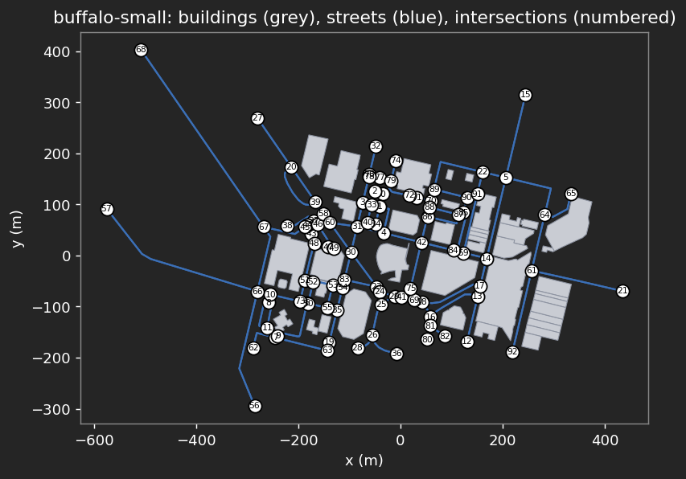
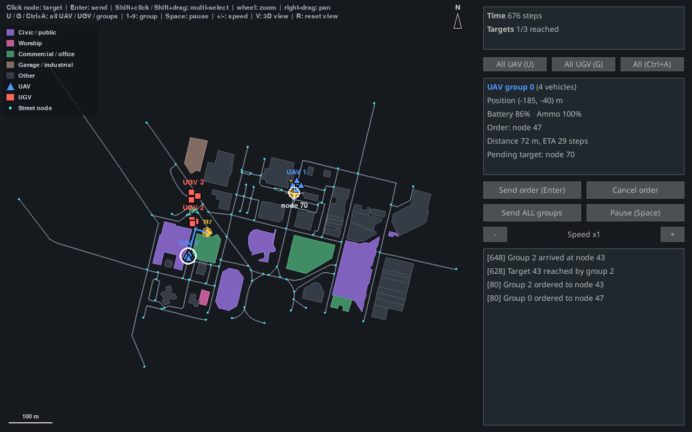
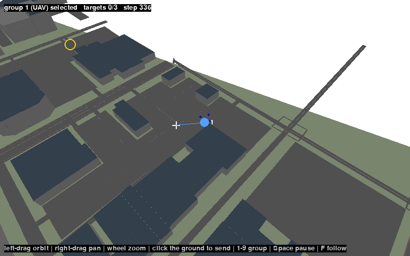
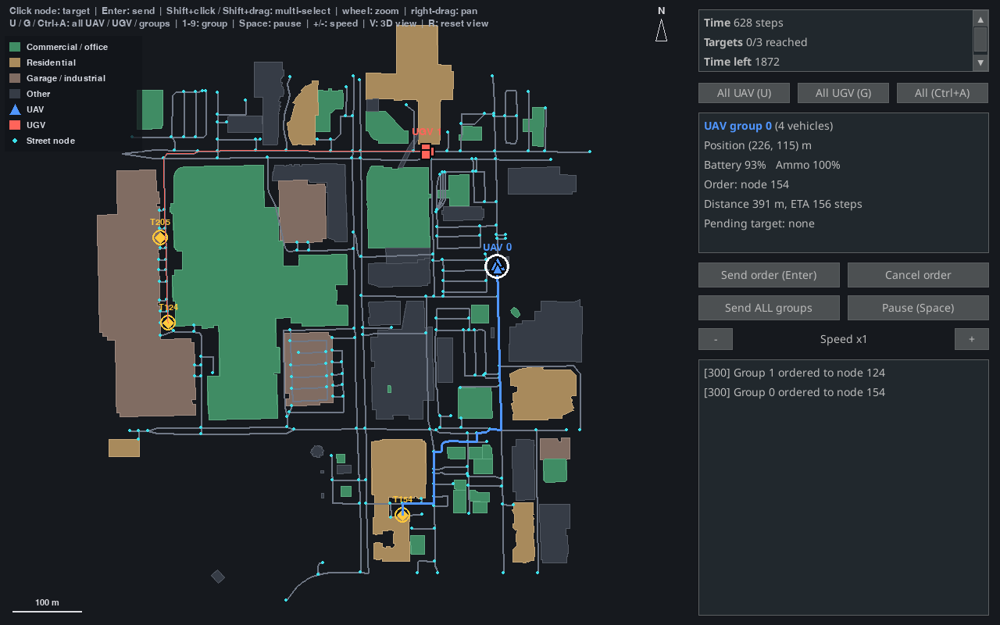
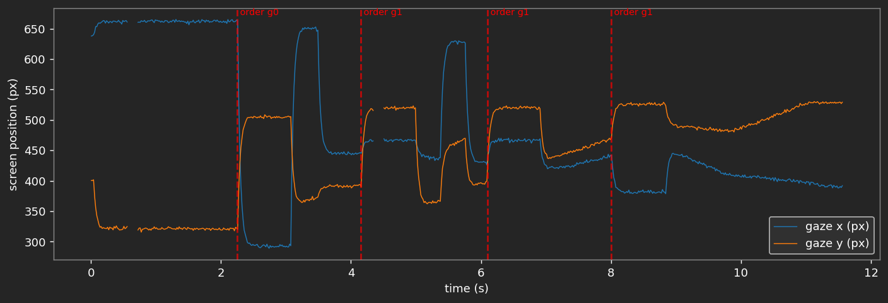

Closing the Human–AI LoopModular Architectures for Autonomous Teaming
and Physiological Sensing
A two-session hands-on tutorial: MOSAIC and SHaSTAIEEE SMC 2026 · Bellevue, WA
Kristian Dalland · Bennett Kwaku Dogbey
iHuman Lab · Oklahoma State University
Human in the Loop Systems Lab (HILS Lab) · University at Buffalo
2026-10-04
Today’s Sessions
Two hands-on sessions, back to back, in the same room.
8:30–10:30 AM Session 1 · MOSAIC
A configurable testbed for human–AI teaming. Play a search-and-rescue mission in your browser, then change the task, the AI teammate and the sensing.
11:00 AM–1:00 PM Session 2 · SHaSTA
A simulator for human–swarm teaming. Put a human in the loop with a swarm, and log what they do on one clock.
Evergreen C Where
@Hyatt_Meeting Wi-Fi network
SMC26 Wi-Fi password
Session 2 · 11:00 AM–1:00 PM
SHaSTA
An Open-Source Simulator for Human and Swarm Team Applications
A hands-on tutorial: putting a human in the loop with a swarm
Meet the Team
Oklahoma State University × University at Buffalo
Hemanth Manjunatha Assistant Professor, MAE Oklahoma State University iHuman Lab
Ehsan T. Esfahani Associate Professor, MAE University at Buffalo Human In the Loop Systems (HILS) Lab
Souma Chowdhury Associate Professor, MAE University at Buffalo ADAMS Lab
Karthik Dantu Associate Professor, CSE University at Buffalo DRONES Lab
SHaSTA was built with UB alumni Prajit KrisshnaKumar, Joseph Distefano, Payam Ghassemi, Amir Behjat and Apurv Jani.
What This Tutorial Covers
You will put a person in front of a swarm, record them on one clock, and swap in your own pieces.
Part 1 — Why human–swarm interaction what to study, and what to measure
↓
Part 2 — Open the notebook nothing to install: a map and a config file in your browser
↓
Part 3 — Put a human in the loop play the operator, then change the mission
↓
Part 4 — Measure the human, then extend LSL, a recorded session, and your own experiment
Part One Why Human–Swarm Interaction the question, and what you need to study it operator → swarm → measurement
Why Human–Swarm Open the Notebook Human in the Loop Measure & Extend
The Question
How should a person supervise a team of autonomous vehicles they can’t fully see or predict?
Human–swarm teams are used in disaster response, logistics and defence. What makes them hard to study is the person: too many vehicles overload them, they step in too much or too little, and they trust the swarm too much or too little. A useful testbed has to change four things, and measure the human.
Interface How the person sees the swarm and gives orders: maps, communication, even VR.
AI Learning agents that can command the swarm or advise the person: reinforcement and imitation learning.
Human factors What the person’s body and behaviour reveal: physiological sensing such as EEG and eye tracking.
Swarm The vehicles and their behaviours: formations, path planning, composable primitives.
SHaSTA is a testbed built around those four, with the human at the centre.
What Is SHaSTA
An open-source Simulator for Human and Swarm Team Applications (Manjunatha et al., 2024), a pybullet-based simulator for studying how people command and work with swarms. Four components:
SHaSTA core The swarm simulation: pybullet physics on real OpenStreetMap city maps, UAV and UGV groups, formation and path planning.
Human interface Shows the swarm state and sends the operator’s commands to the core.
Data recording and sync Lab Streaming Layer time-stamps the operator’s inputs and mission events.
Physiological recording EEG, eye tracking and other sensors, streamed onto the same clock.
Every mission runs the same loop, and each step can be logged:
1Observe
The operator sees positions, battery, ammo and mission progress.
2Decide
They choose which group goes where.
3Command
SwarmCommander turns the order into a route on the street graph.
4Execute
Formation moves the group along the route, and the state changes.
The paper describes all four components. ihuman-shasta ships the core and the interface; the notebook adds LSL (lsl_tools.py).
Part Two Open the Notebook nothing to install: everything runs in your browser server → notebook → first map

Tutorial notebook On the tutorial server: the whole tutorial, run in your browser Sign in with your password, then open 01_shasta_hsi.ipynb jupyter.ihuman-lab.work
Why Human–Swarm Open the Notebook Human in the Loop Measure & Extend
Open the Notebook
Four steps, and nothing to install.
1 Go to the server
Scan the code on the last slide, or open jupyter.ihuman-lab.work
2 Sign in
With the password you were given
3 Open the notebook
01_shasta_hsi.ipynb, in the file list on the left
4 Pick the kernel
Python (smc), at the top right of the notebook
Notebook 01_shasta_hsi.ipynb: the whole tutorial, in eight steps
Interface live_play.py and world_view.py show the interface and the 3D world in your browser
Settings config.yaml: the simulation as a text file
Recording lsl_tools.py: orders and gaze into one file
The top right says Python (smc). Run each cell with Shift+Enter, from the top.
Prefer your own laptop? The appendix has the install, in one slide.
Your First Map
The city is a graph, and the simulation is a text file.
Step 1 the map, as a street graph

First Checkpoint
Confirm
The kernel says Python (smc)
Step 1 printed the intersections and street segments
The map shows numbered intersections
No red error text under any cell
| Symptom | Recovery |
|---|---|
No module named 'shasta' |
Wrong kernel: pick Python (smc) at the top right |
No module named 'live_play' |
live_play.py is not in the notebook’s folder |
| The picture does not respond | Click the picture once, then use the mouse and keys |
| A blank picture | Run the cell again and wait a second |
Cannot load an actor multiple times |
Rerun the whole cell, not only its last line |
| The server does not open | Ask a helper; share a neighbor’s screen meanwhile |
Everyone with a map on screen is ready for Part Three.
Part Three Put a Human in the Loop the built-in interface, or your own shasta gui → SwarmCommander → your interface
Why Human–Swarm Open the Notebook Human in the Loop Measure & Extend
Play It Yourself
Open Step 3 of the notebook, Human in the loop
Run Shift+Enter, then click the picture so it receives your mouse
Command Click a group’s marker, click a street node, press Enter
Watch The groups follow the streets; the targets are the yellow markers
Stop Press Stop to end and see how many targets you reached

You should see this: the map and the swarm on the left, the status and event log on the right.
The Controls
Click the picture first. The mouse and keys then go to the interface.
click or 1–9 Pick a group — click its marker, or press its number
click Pick a target — click near a street node; a white cross marks it
Enter Send the group — or the Send order button, or double-click the node
Shift Select several groups — shift-click their markers, or shift-drag a box
wheel Zoom the map drag Pan with the right button
Space Pause / resume
- + Slow down / speed up
V 3D camera view, follows the selected group
Options for your study are numbers in the notebook’s Step 4: vehicles, targets, time, and the seed that repeats the targets.
One Seam: SwarmCommander
The interface is a thin window on SwarmCommander, which has no display dependency. Anything that can call it can be the human:
Built-in interface the window you just saw
Scripted operator a policy that plays the human
AI advisor suggests or issues orders
Your interface a web page, joystick, VR
from shasta.interaction import Mission, SwarmCommander
commander = SwarmCommander(env, Mission.random(env.core.get_map(), 2, seed=0))
commander.send(0, commander.mission.targets[0]) # the human's orders
commander.send(1, commander.mission.targets[1])
while not commander.mission.is_over(commander.step_count):
commander.update() # advance one tick
print(commander.events) # what happened, and whenRun it in the notebook — Step 3’s No human needed cell plays a whole mission this way, with a scripted operator and no window. Set headless=False in load_config to watch it in the pybullet 3D window.
No Human Required
You just commanded the swarm by hand. The same environment runs with nobody at the keyboard.
notebook · Step 2 an order, with no human
Run Step 2, the cell called Order a group, with no human.
Would a learning agent change this loop?
What you get
1 The Gym API reset() and step(action), the interface RL libraries expect
2 An order is the action {group: node}; None means keep going
3 No window PyBullet runs headless and the mission runs as fast as it can compute
A person, a script, or an RL agent can command the swarm: one environment, one interface.
The PyBullet World
SHaSTA’s physics is PyBullet: no window needed, yet you can reach in.
Headless PyBullet runs in DIRECT mode: a trip across the map takes a fraction of a second
Render getCameraImage draws the 3D scene to an image, so a browser can show it
Interact A click becomes a ray into the world; where it meets the ground, the nearest street node is the order
Try it Step 3, Interact with the PyBullet world: drag to look around, click the ground to send the selected group

The white cross is the node that was clicked.
What You Can Customize
Every setting is a number. Change them and play your own.
notebook · Step 4 the build-your-own cell
Run Change the numbers, run the cell, and play.
How does the operator’s job change?
What each one changes
1 Vehicles More to supervise: more load on the operator
2 Targets and radius More, or harder to reach
3 Time limit Less time, more pressure
4 Seed The same targets, so trials are comparable
Build a Map of Anywhere
Any place in OpenStreetMap becomes a SHaSTA map in a few seconds.
notebook · Step 4 build a map of anywhere
Fetch Roads and buildings from OpenStreetMap
Build A 3D mesh and the latitude/longitude table
Play The same interface, on your own campus or city
Which place would you study?

Downtown Bellevue, built in the notebook: 243 intersections.
Break · 10 minutes
Take a Break
Next · Part Four: Measure the Human, Then Extend
Part Four Measure the Human, Then Extend one clock for everything the person and the swarm do events → LSL → recorder → analysis
Why Human–Swarm Open the Notebook Human in the Loop Measure & Extend
Why LSL
Lab Streaming Layer is the open-source standard for synchronising data from many devices and programs. SHaSTA’s paper builds its data recording on it.
One stream per source Each device or program publishes a stream: EEG, an eye tracker, event markers.
One clock Every sample is time-stamped on a shared clock, so streams line up without extra cleaning.
One recording A recorder such as LabRecorder saves every stream together for analysis.
In the paper’s study, 20 participants commanded 3 UAV and 3 UGV platoons while EEG, eye tracking and game events were recorded through LSL. A session looks like this:
1Start streams
Start each device’s LSL stream.
2Run
Run the scenario: the interface, or your own operator.
3Record
Record every stream in one file, then analyse.
Log the Operator, See It on the Clock
Every order becomes a time-stamped marker, with its target on the screen.
notebook · Step 7 two lines on the commander
Run Step 7: give a few orders, then press Stop.
What a recorder receives (x, y): target, px
LSL time marker
0.00 s session_start
2.27 s order group 0 -> 10 (293, 505)
3.60 s order group 1 -> 25 (467, 520)
4.95 s order group 0 -> 40 (445, 391)
7.05 s session_endRecord Your Own Session
Play the operator. Your orders and the gaze go into one file.
1Markers
Every order you give, with its target on the screen.
2Gaze
Where the operator looks. Synthetic here: it looks at your last target, then follows the group.
3Recorder
Picks up exactly these two streams and writes one XDF file.
notebook · Step 7 the last cell
A real eye tracker streams the same way: it publishes a Gaze stream from the laptop it is plugged into, and the recorder picks it up. See the appendix.
Analyse the Recording
Both streams share one clock, so a look lines up with an order.

Gaze over time Each red line is an order. The gaze jumps to the target right after it.
Where they looked Fixations and a heatmap on the interface.
Reaction to an order How long until the operator looks at the target, and for how long.
Four Things That Will Trip You Up
All four below are things this tutorial hit directly while testing every command and snippet in it — not hypothetical.
The map lives one level deeper than you’d guess config['experiment']['map_to_use'] = "buffalo-medium" — not config['core']['map_name'], which doesn’t exist.
Actors can’t be reused across environments Build a fresh groups dict for every new ShastaEnv(...) — reusing the same UAV/UGV objects raises ValueError: Cannot load an actor multiple times.
A group with no path can crash mid-mission If one group finishes well before another, continuing to call env.step(None) can raise IndexError in GoToNodeExperiment.apply_actions (intermittent — seen once in three runs in this tutorial). Give every group a similar-length route until this is fixed upstream.
Mission.random’s count should match your group count Mission.random(map, 3, seed=0) against a two-group env leaves a target unassigned to any real group — mission.is_complete() then never returns True, even after every group you actually sent has arrived.
Build Your Own Experiment
Subclass GoToNodeExperiment, add your own rules, and compare strategies.
notebook · Step 5 abridged
class TargetCollector(GoToNodeExperiment):
def apply_actions(self, actions, core):
... # pick the next node with the strategy, fly to it
def get_done_status(self, observation, core):
... # done when every node has been visited
def compute_reward(self, observation, core):
return (1.0 if self.arrived_now else 0.0) - 0.001Run Step 5, then add a strategy of your own.
Two strategies, the same five nodes
| Strategy | Steps | Distance | Reward |
|---|---|---|---|
| nearest | 6023 | 2828 m | -1.02 |
| random | 6832 | 3196 m | -1.83 |
1 Your rules What the vehicles do, what is observed, when it ends
2 A reward +1 for each node, a small cost for each step
Open Discussion
1 Human–Swarm Teaming What human–swarm teaming question would you ask first, and what would you change in the map, the mission or the number of vehicles to ask it?
2 Human and autonomy Which decisions should the person keep and which should the swarm make on its own, and how would you tell good teaming from an operator who just follows?
3 Sense the human Which physiological signals, and which swarm events, would you use to close the loop?


Thanks!
Questions? See the SHaSTA repository README.
ehsanesf@buffalo.edu & hemanth.manjunatha@okstate.edu
Appendix
More ways to run it
On your laptop, and with a real eye tracker
Run SHaSTA on Your Own Laptop
Everything here runs on a laptop too, with Python 3.9 or newer and Git.
1 Clone and isolate
The code, and a private Python environment
2 Install SHaSTA
[gui] adds the human interface; -e means edits apply without reinstalling
3 Notebook packages
For LSL, the recording, and the browser interface
4 Open the notebook
Start Jupyter from the notebooks folder
Not on PyPI yet pip install "ihuman-shasta[gui]" fails with “No matching distribution found.” Install from a clone as above. The notebook asks for the kernel: choose Python 3 (ipykernel). shasta gui opens the interface in its own window.
Record a Real Study on a Laptop
A USB eye tracker cannot plug into the server, so a real recording runs on the tracker’s laptop.
on the tracker’s laptop in notebooks/
Then LabRecorder writes one .xdf file. Upload it next to the notebook, set XDF_PATH in Step 8, and run the analysis unchanged.
Caveat tobii_to_lsl.py and shasta_gui_lsl.py have not been run against real hardware in this repository: check them on your own setup first.
SHaSTA Tutorial · OSU · UB